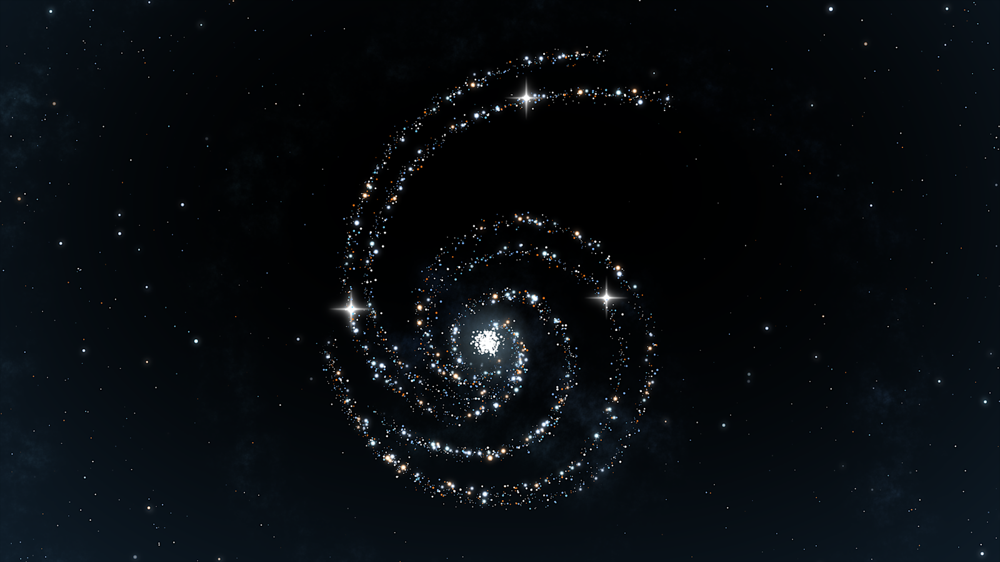
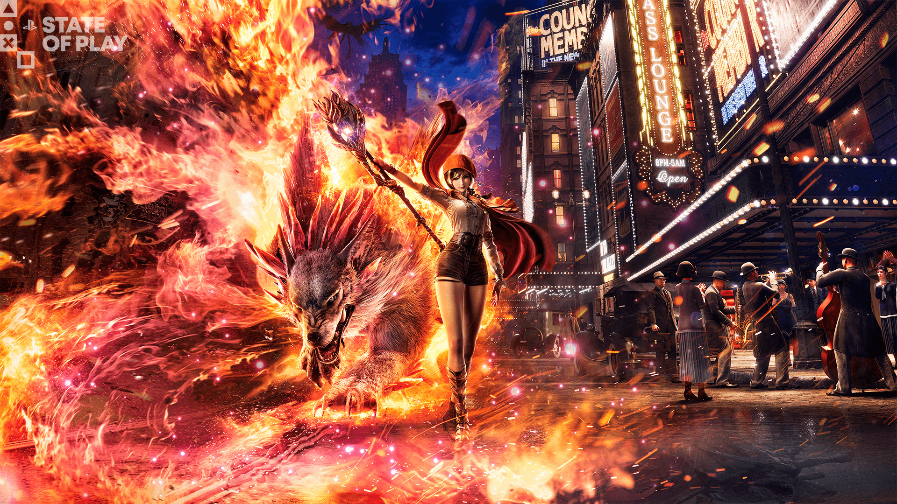
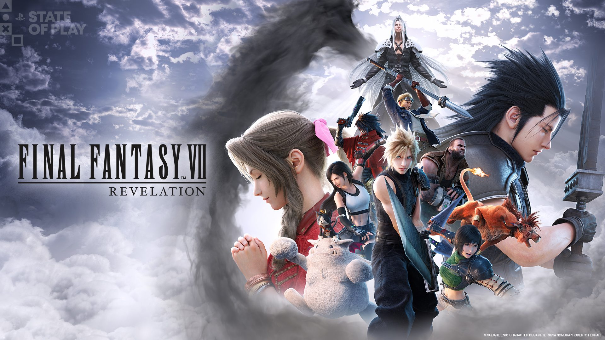

🔥🔥🔥
今日有新旗舰：GPT-6 Astra
OpenAI 正式部署 GPT-6 Astra，首达 Critical 网络安全能力阈值。
- 日期
- 2026-09-03 官宣（CST 跨入 9/4）
- 主体
- OpenAI ·
gpt-6-astra - 价格
- $10 / $50 per MTok（厂商自报）
- 库
- AI · 模型发布
今日主线是 GPT-6 Astra 旗舰正式部署，以及昨晚 State of Play + Japan（21:00 CST）补入核的展会片单。今日有新旗舰：GPT-6 Astra；今日无新 MCP/Skill 推荐。
gpt-6-astra）判定：旗舰日 + 展会补录日。Gemini 3.8 Flash / Fable 5.1 / 夜勤人2 1.0 / Baseten 推荐不复述。预发布不当今日旗舰的旧 Astra 口径已过期。
OpenAI 正式部署 GPT-6 Astra，首达 Critical 网络安全能力阈值。
gpt-6-astra昨 21:00 CST 双场已播，官方总表 30+ 作；世界首发 + 新锁进片单。
重制三部曲完结篇定档，SoP 以深潜收尾。
Firesprite × AdHoc；预购 9/10 开。
Konami 新 IP，1920s 纽约魔法动作；无官方简中店名，留英文。
3.7 两位五星共鸣者实机昨公开（岁主心 + 锁暝）。
旗舰 1 + 行业/安全 1；无新 MCP/Skill 推荐。
鸣潮实机 + Rematch×蓝色监狱联动定档。
展会片单为主；Keeper PS5 翻牌进独立观察。
空库未出 Tab。
今日有新旗舰：GPT-6 Astra。今日无新 MCP/Skill 推荐。Cursor changelog 窗内无新于昨日已报的 Self-hosted machines。
判定：模型轴权重拉满；推荐轴明确写无。
OpenAI 发布 GPT-6 Astra（gpt-6-astra），称为迄今最智能且最对齐、面向计算机使用与专业工作的旗舰，并首次达到 Preparedness Framework 的 Critical 网络安全能力档。

gpt-6-astra| 指标 | GPT-6 Astra | GPT-5.6 Sol | Gemini 3.8 Flash |
|---|---|---|---|
| 定位 | 旗舰 · Critical cyber | 上一代旗舰线 | Flash 工作马（昨报） |
| Input / Output | $10 / $50 | $4 / $20 | $0.75 / $3.75 |
| Context | 1.05M | 1.05M | 未核本条 |
| FrontierMath T4 | ≈98% | 未核 | 未核 |
| ARC-AGI-3 | 99.9% | 未核 | 未核 |
| OSWorld 2.0 | 72.6% @~40m | 65.7% @~75m | 未核 |
| DeepSWE v1.1 | 74.1%（二线） | 70.8%（二线） | 未核 |
来源：OpenAI GPT-6 Astra · Safety overview · System Card · Models
OpenAI 推出面向前线防守方的 Daybreak 计划，承诺 10 亿美元级补贴接入、培训与合作，服务水电、地方政府、金融等关键设施防守。
窗内未核到可独立成条的新 MCP / Skill / 工作流推荐；Claude Code managedMcpServers 属组织托管设置，记编程产品能力，不冒充推荐。
主要信源：OpenAI Index / Deployment Safety / Developers Docs；Anthropic News（窗内无新旗舰）；Google Models & research（无新于昨 Flash）；Cursor changelog（无新于昨）。
二次元以鸣潮 3.7 角色实机与 SoP 日本向联动/主机化为主；原神 / 星铁 / 终末地窗内无新开门。
判定：角色实机达门槛；大版本开门无新增。
库洛公开 3.7 两位五星共鸣者实机：「心」（岁主·心月狐）与「锁暝」，导电属性，演示含形态切换与协同雷击。
来源：库洛公开实机（二线 17173 / 巴哈姆特 9/3 交叉）；开门日与卡池时刻待核官网。
SoP 宣布 Sloclap《Rematch》与《蓝色监狱》联动，2026-09-24 登陆 PS5。
来源：PS Blog 总表
行业主轴是昨晚 State of Play + Japan：世界首发与新锁进🎬展会片单；已定档深潜收表。今日有独立游戏观察新增（Keeper PS5 发售翻牌）。
判定：展会周片单强制出轴；未播规则已解除。
双场连播结束，PlayStation Blog 放出字母序总表与多篇专文；世界首发与新锁如下，已定档深潜见表。



| 作品 | 增量 | 档期 |
|---|---|---|
| 最终幻想VII Revelation | 开放世界向深潜 · FITS · 预购特典 | 2027-04-08 |
| 怪物猎人 荒野：Ascendance | Elder Dragon Gundoraja · TGS 试玩 | 2027 |
| 羊蹄山之魂 Complete | Most Wanted 生存波次 + 关原故事扩 | 2026-10-01 |
| Gran Turismo 7 Spec IV | 两段更新 · 赛道/车辆/漂移等 | 2026 年 Q4 两段 |
| Rev. Noir | 新实机 · 确认 2027 | 2027 |
来源：PS Blog 总表 及同日专文簇
Double Fine《Keeper》PS5 版于 State of Play 当日上架；Steam 简中名称字段仍为 Keeper（不自译）。
来源：PS Blog 总表 Keeper 条 · Gematsu 2026-09-03